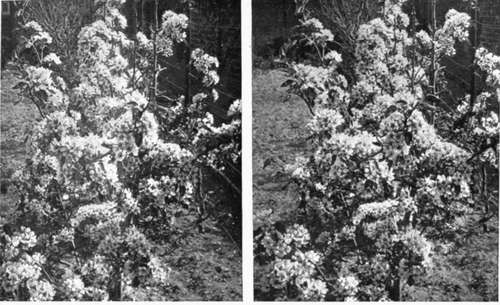
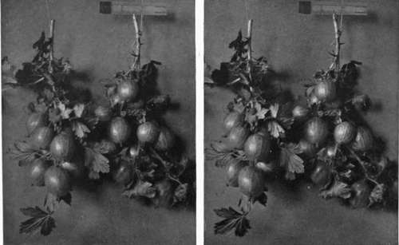

Birds And Their Nests And Eggs. Part 5
Description
This section is from the book "Nature Photography For Beginners", by E. J. Bedford. Also available from Amazon: Nature Photography for Beginners.
Birds And Their Nests And Eggs. Part 5
I intend to leave you to calculate the exposure necessary for this nest of the Hedge Sparrow because I want you to begin at once to learn to depend upon yourself. While you are making the exposure I will look round and try to find another Robin's nest.
(The reader will please imagine the narrator has been away for about ten minutes and has just returned).
I have found one quite close to the back door of the house in an old kettle stuck up in a tree in the orchard. There are six eggs in it and the bird is not on, so if you come with me we will see whether a photograph of it can be obtained. It is higher up than the Hedge Sparrow's just left, but I think by raising your tripod as high as possible, you will just be able to manage. Give me the small mirror you have brought and I will try and reflect some light on the eggs when you make your exposure, to help to make them more clearly seen, but in doing so I must be careful to avoid making them too light or they will look unnatural. To secure the detail of the interior of the kettle you must give a full exposure, and when developing remember the character of the subject so that you can suit your developer to it.
In looking for the Robin's nest just now I came upon an interesting subject for you: a Pheasant sitting on her nest in the orchard. She is under some bramble sprays, but can be seen quite distinctly. If you go very carefully and slowly, approaching the nest by degrees, and keeping your head under the focussing cloth—but be careful to look where you are going or you may stumble and spoil your chance—if she is sitting hard you may be able to secure a photograph of her on the nest. This will be a good opportunity to use the single combination of your lens. Unscrew the front one and place it safely in your case. Then rack out the camera to its -double extension and you will find an image is given on the tailed Tit's nest and two on the letter-box; one, the site showing a view of the garden gate with the box attached, and a nearer one of the nest and eggs by first opening the door of the letter-box from the back. If the bird is on you will probably find she will fly at your finger if you put it near her and will peck it sharply, but you can take her in your hand and lift her off the eggs if you like; she will not mind, and will probably remain somewhere close at hand and pop back to the nest again at the first opportunity. Notice what a large amount of material has been collected for this nest; it almost fills the letter-box.
Now you have made the exposures let us go in to tea. We have one plate left, and it is a good plan to keep one unexposed in case anything extra special turns up on our journey back. It is very unfortunate to find a good subject and be unable to photograph it because we have used all our plates. It is far better to carry one home again still unexposed than have to regret the want of one for some interesting subject which may not turn up again for a long time.
That cup of tea and the home-made bread and butter and cake seemed to be extra nice; but I often find it is so in the country, and expect the sauce of appetite has something to do with it. As the light will still be good for quite an hour, we will walk through the little wood at the back of the house to a field beyond, and we may be able to find a few subjects for our next excursion. In the meantime, you will be able to get some practical experience by developing the exposures made to-day, and the importance of this part of the work must not be overlooked, as, after all, it is very unsatisfactory to spend the time and patience required to obtain subjects if you cannot produce good negatives from the exposed plates.
Let us examine this hawthorn bush by the side of the path. After a certain amount of experience one gets to know where to expect to find certain nests, and in this case I have not been disappointed. I knew this was a suitable place for a Chaffinch to build its nest, and here is one, but it is not finished, so we must remember it when we come again next week.
Look! there goes a Stoat across the path. You didn't see him? no, you must keep a sharper look-out as you cannot expect he will stand still for you to gaze at him. He seemed to be making his way across the ride and evidently did not expect to see us. Let us go and see if he was there for any purpose. Mind where you tread, there is a Pheasant's nest, look, just in front of you; do not disturb it as there are only four or five eggs at present and they are almost covered over with the dead leaves. I fancy Mr. Stoat was on a poaching expedition and we just arrived at the right time, although, perhaps, he thought at the wrong time for him. We will hope the nest will contain more eggs next time we come, and if they are there will try and get a photograph of them. I have heard Pheasant preserving described as, " Up gets a guinea, off goes a penny farthing, and down comes half a crown (perhaps)." That is to say, each Pheasant costs about a guinea to rear and when shot is worth about two shillings and sixpence.
Here is a beautiful bunch of Primroses at the foot of this old stump. Would you like to expose your last plate on this? I think, as the light is getting weaker now, we had better not wait any longer. Besides, we shall only just have comfortable time after taking this to get to the station, as we are going a longer way round now. As you have decided to take it, remember what I said about looking down too much at the Thrush's nest and avoid the same kind of thing here. Shorten the tripod as much as possible and fix the ends firmly in the ground or it may slip during the exposure, causing a double image on the plate. Arrange the camera so that you look across the bunch, and try and get the flowers against the dark moss-covered old tree stump, as this will help to show them up and give you an effective background. You will probably require to stop down to /22, and as the light here is a good deal cut off by the branches of the trees overhead the exposure will be a relatively long one. You find it is fifty seconds by your meter; well, you may give it a minute, and as there is no wind here in the wood you will not get any movement on that account. I have already cautioned you about setting your tripod firm. You will not often see a prettier group of Primroses than this one, and I hope the negative will turn out all right. I should like to have a print from it by and by.
As you have exposed your last plate you can pack up the camera and stand, first putting the lens away in its case and taking care no part of the apparatus has been overlooked and left behind. We have made twelve exposures during the afternoon, and have obtained, in addition to the Primroses, seven different kinds of nests, so I think you ought to be very well satisfied with your first excursion, so far. I shall hope to hear next time I see you that all the exposures have been turned into good negatives.
Fig. 44. Pear Tree in Bloom.
Fig. 45. Gooseberries.
Continue to:
- prev: Birds And Their Nests And Eggs. Part 4
- Table of Contents
- next: Chapter IX. How To Observe And Photograph Some Of Our Commoner Birds And Their Nests And Eggs. Part 6
Tags
nature, photography, art, birds, camera